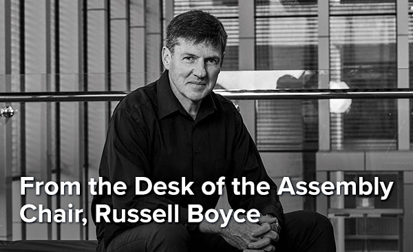

| *|MC:SUBJECT|* | View this email in your browser |
|
|

|
|  |
|
Innovation. Many if not most of the truly disruptive technologies and innovations that have come out of the space sector, have come as a result of the needs and requirements for science missions. While operational space capabilities to meet government and telecom industry needs have tended to pursue a conservative approach, space research and research-from-space has necessitated that innovators “push the boat out” to provide the technologies needed to achieve audacious science goals. Read more. |

|
|
Getting Apollo 11 astronauts to the moon in July 1969, required the development of an incredible array of innovative technology and 51 years later, we can only look back and marvel at the tenacity and fearlessness of our early space explorers to accomplish such heights with less technology than today’s mobile phones. Where were you when man first landed on the Moon?Of course, if you are under 51 years of age, you can’t answer this question, but you could answer the question, Where do you think space travel will be in 50 years? Tell us and we will publish your responses on the COSPAR 2021 website in celebration of “Technology” month.
|

|
|
After the USSR launched its first Earth Satellite in October 1957, and thereby opened the space age, the International Council of Scientific Unions (ICSU), now the International Science Council (ISC), established its Committee on Space Research (COSPAR) during an international meeting in London in 1958. COSPAR’s first Space Science Symposium was organised in Nice in January 1960. In COSPAR’s first years of existence, it played an important role as an entity ignoring political considerations and views and aimed to be an open bridge between East and West for cooperation in space with all questions addressed being solely from the scientific standpoint. COSPAR’s objectives are to promote, on an international level, scientific research in space, with emphasis on the exchange of results, information and opinions and to provide a forum, open to all scientists, for the discussion of problems that may affect scientific space research. These objectives are achieved through the organisation of Scientific Assemblies, such as the 43rd Assembly – COSPAR 2021 - to be held in Sydney, Australia. |

|
|
After risking their lives for the advancement of humanity, Armstrong, Aldrin and Collins had the dubious pleasure of being stuck in planetary protection quarantine on their return. Since humans had never been to the moon before NASA scientists couldn’t be sure that some deadly space-borne plague hadn’t hitched a ride home on the astronauts. From the moment their re-entry capsule splashed down in the Pacific Ocean - 195 hours later on July 24 - the trio completed 21 days of quarantine until their release on August 10, 1969. Only three weeks, you say! Since November 2000, the International Space Station has been continuously occupied; and has been home to 240 individuals from 19 countries. Quarantine in the past format is no longer the norm. Astronauts Chris Cassidy from the USA and Russians Anatoli Ivanishin and Ivan Vagner successfully docked with the ISS on 9 April 2020 and will spend six months on the ISS with Cassidy taking command. Before blastoff, Cassidy said part of him was pleased to be leaving Earth at the most uncertain time in a generation. |

|
|
As companies across the globe pivot, re-engineer and recalibrate as a result of the COVID-19 pandemic, we look back at some of the inspiring industries better known for their terrestrial products, who pioneered the path and made it possible to explore the Moon and space. They found creative solutions by taking the ordinary to the extraordinary. International Latex Company (ILC) Playtex – the Cross Your Heart undergarments manufacturer of the sixties made spacesuits. Some of the layers of fabric in the suits were adapted directly from materials Playtex used in its bras and girdles. The sewing of the astronauts’ suits turned out to be more daunting and demanding than anticipated. Singer Sewing Machines – for the parachutes required for re-entry, each parachute was assembled from panels of material, sewn together with 3.5 miles of thread and required two million individual stitches per parachute, with the seams run through black Singer sewing machines by hand. Whirlpool - the home appliance manufacturer better known for washing machines, helped take meals to the moon through innovations in food packaging and storage. They developed new techniques for freeze-drying food, to remove moisture to make food lighter and last longer. Westinghouse Electric Corporation also played a significant part in the historical event, having developed the camera that captured the first images of the moon’s surface. |

|
|
Over one hundred years ago, on August 16, 1912, Glenn L. Martin established the Glenn L. Martin Company in Los Angeles, California. He started the company after building his first plane in a rented church, where he took a leap of faith on his risky but innovative new aircraft design at the urging of none other than Orville Wright. Four months later and four hundred miles away, on December 19, 1912, Allan and Malcolm Lockheed founded the Alco Hydro-Aeroplane Company, later renamed the Lockheed Aircraft Company. Talented mechanics, they set up shop out of a garage, constructing seaplanes that would shatter speed and distance records for overwater flights. A church and a garage. These were humble beginnings, But these were also men of unrelenting vision and unwavering purpose. The gift that Martin and the Lockheed brothers shared was a unique ability to look past the obstacles of today to the promise of a brighter tomorrow. And they knew that innovation, performance and purpose were the keys to accelerating that tomorrow. Confirmed Sponsors
Anchor Sponsor
Supporter
Exhibitor |

|
COSPAR 2021 Secretariat
Emma Bowyer Contact COSPAR HQ
Aaron Janosky For further information regarding the COSPAR 2021 scientific program also visit COSPAR (cospar@cosparhq.cnes.fr). Scientific assembly abstract submission. |
General Enquiries
Selina Moscatt Sponsorship & ExhibitionsMarketing & Communication
Suellen Holland Accommodation Management
Adriane Pinto Registration
Jessica Moebus This email was sent to *|EMAIL|*. |